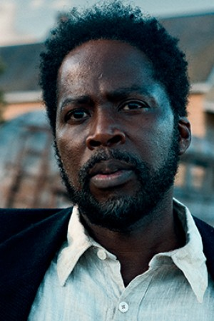

⌘ ⇧ X
01 — Recognise“Who’s that again?”
A face becomes a name, an actor, and a little story context. Turn the card over for relationships, the last scene, and their other work.
Faces matched on your MacA little context. No spoilers.
The face is familiar. The name isn’t.
One shortcut tells you who’s on screen and where you left them in the story.
For your Mac. Free & open source.

SEEN S01E03Played by Harold Perrineau
The town’s self-appointed sheriff, trying to keep the residents safe.
You asked
Boyd is the town’s self-appointed sheriff. He tries to keep order and help the residents stay safe.
Your watch buddy, Alex
Boyd looks like someone who’s already had a very long day.
Try a shortcut above · FROM · Illustrative preview
For the “wait, who’s that again?” moments.
A closer look01 / THE EXPERIENCE
Keep your eyes on the screen. We’ll keep track of the people.
A face becomes a name, an actor, and a little story context. Turn the card over for relationships, the last scene, and their other work.
Faces matched on your MacAsk about the scene in your own words. Get a short answer grounded in what’s on screen and the episodes you’ve already watched.
A question, without a search spiralGet your watch buddy’s take on the moment. Choose a personality: hype friend, film nerd, chill, or Mac. It chimes in when you ask.
Your kind of company02 / YOUR PLACE IN THE STORY
Your episode is the boundary. Characters you haven’t met stay hidden, and notes normally describe the start of your episode.
Try moving the bookmark. The same character, with only the context you’ve reached.
The town’s self-appointed sheriff, trying to keep the residents safe.
The rest stays in the story.Illustrative wording. Later episode details stay hidden in this preview.
A FEW MORE THINGS, ON FILE
A relationship map for each show, with just the people you’ve met.
Write your own episode notes. Your entries take priority over generated ones.
Your library remembers a separate season and episode for every show.
03 / BETWEEN YOU AND YOUR MAC
Your watch history doesn’t need an audience.
Read the sourceFace matching, notes, viewing positions, and correction reports live on your Mac. Keys go in macOS Keychain.
The native Mac app captures a scene when you use a shortcut. Quit the app and its engine stops too.
Ask and React send your captured screen to Anthropic after your consent. TMDB supplies cast data; generated notes use episode summaries.
04 / OPEN YOUR FIRST CASE FILE
Built on your Mac. Ready for your next rabbit hole.
Start with the installer, then add a show.
git clone https://github.com/Hydrazinev/goldfish-brain.git && cd goldfish-brain && ./install.shBring along macOS 14+, Chrome, Xcode, Homebrew, Python 3, and a free TMDB key. An Anthropic key enables generated notes, Ask, and React.
Read the setup guideAllow screen capture.
Connect your keys.
Search for a show.
Let it learn the faces.
Open Netflix in Chrome.
Press ⌘ ⇧ X.
THE SMALL PRINT, IN PLAIN WORDS
It’s designed around your viewing position. Later characters stay hidden, and notes use the start of your episode unless late playback progress is available. Keep your saved episode accurate. AI-generated text can make mistakes.
Automatic episode detection is built for Netflix in Google Chrome. On other capturable video, face matching can still work with the show and episode set manually. DRM or browser settings can prevent screenshots.
The app is free and open source, and TMDB offers a free API key. Generated notes, Ask, and React use your own Anthropic API key and incur usage charges. Face matching runs locally.
Small, dark, obscured, or turned faces can be missed or matched incorrectly. The “Wrong?” and “Missed someone” controls save local reports to help investigate recognition problems.
The installer builds the native app on your Mac. You need the full Xcode app, its accepted license, Homebrew for XcodeGen, and Python 3. Keep the cloned project folder in place; the app uses its Python engine.
There’s no Goldfish Brain account or hosted backend. You use your own TMDB key and, optionally, an Anthropic API key. Your library stays on your computer.